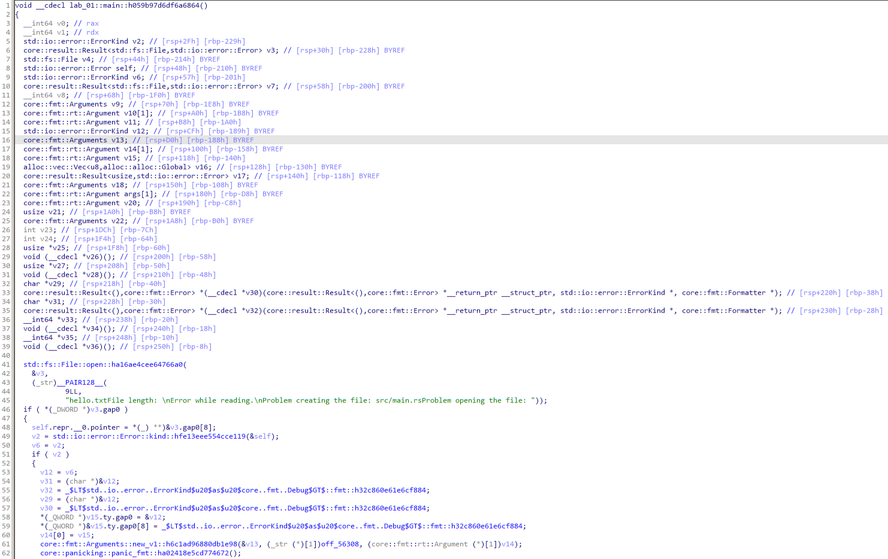

panic!在Rust中，panic!宏一般在程序发生无法恢复的错误后。下面将简单分析panic!的执行流程。
1 2 3 fn main () { panic! ("This is a panic" ); }
输出结果：
1 2 3 4 5 6 7 8 9 10 11 12 thread 'main' panicked at src/main.rs:2:5: This is a panic stack backtrace: 0: rust_begin_unwind at /rustc/3f5fd8dd41153bc5fdca9427e9e05be2c767ba23/library/std/src/panicking.rs:652:5 1: core::panicking::panic_fmt at /rustc/3f5fd8dd41153bc5fdca9427e9e05be2c767ba23/library/core/src/panicking.rs:72:14 2: lab_01::main at ./src/main.rs:2:5 3: core::ops::function::FnOnce::call_once at /rustc/3f5fd8dd41153bc5fdca9427e9e05be2c767ba23/library/core/src/ops/function.rs:250:5 note: Some details are omitted, run with `RUST_BACKTRACE=full` for a verbose backtrace.
下面是主函数的逆向：
1 2 3 4 5 6 7 8 9 10 11 12 13 14 15 16 17 example::main::h6a0467faef132dda: push rax lea rdi, [rip + .L__unnamed_8] lea rdx, [rip + .L__unnamed_9] mov rax, qword ptr [rip + std::panicking::begin_panic::h98e090bdb7d9058a@GOTPCREL] mov esi, 15 call rax .L__unnamed_8: .ascii "This is a panic" .L__unnamed_12: .ascii "/app/example.rs" .L__unnamed_9: .quad .L__unnamed_12 .asciz "\017\000\000\000\000\000\000\000\n\000\000\000\005\000\000"
可以看到，panic!宏实际上调用的是std::panicking::begin_panic，调用的参数一共有3个，前2个用于表示传入的字符串切片，而第3个则无法直接通过内容猜测功能。
1 2 3 4 5 6 7 8 9 10 11 12 13 14 15 16 17 18 19 20 21 22 23 24 25 26 27 28 29 30 31 32 33 34 35 36 37 38 39 40 41 42 43 44 45 46 std::panicking::begin_panic::h98e090bdb7d9058a: sub rsp, 40 mov qword ptr [rsp + 32], rdx mov rax, qword ptr [rsp + 32] mov qword ptr [rsp + 8], rdi mov qword ptr [rsp + 16], rsi mov qword ptr [rsp + 24], rax mov rax, qword ptr [rip + std::sys_common::backtrace::__rust_end_short_backtrace::h09ebf2ec8a3c7498@GOTPCREL] lea rdi, [rsp + 8] call rax std::sys_common::backtrace::__rust_end_short_backtrace::h09ebf2ec8a3c7498: push rax mov rax, qword ptr [rip + std::panicking::begin_panic::{{closure}}::hc0962f7734eef2e0@GOTPCREL] call rax ud2 std::panicking::begin_panic::{{closure}}::hc0962f7734eef2e0: sub rsp, 56 mov rcx, qword ptr [rdi] mov rax, qword ptr [rdi + 8] mov qword ptr [rsp + 24], rcx mov qword ptr [rsp + 32], rax mov rcx, qword ptr [rsp + 24] mov rax, qword ptr [rsp + 32] mov qword ptr [rsp + 8], rcx mov qword ptr [rsp + 16], rax mov rcx, qword ptr [rdi + 16] lea rsi, [rip + .L__unnamed_1] mov rax, qword ptr [rip + std::panicking::rust_panic_with_hook::h51af00bcb4660c4e@GOTPCREL] xor r9d, r9d mov edx, r9d lea rdi, [rsp + 8] mov r8d, 1 call rax jmp .LBB3_3 .LBB3_1: mov rdi, qword ptr [rsp + 40] call _Unwind_Resume@PLT mov rcx, rax mov eax, edx mov qword ptr [rsp + 40], rcx mov dword ptr [rsp + 48], eax jmp .LBB3_1 .LBB3_3: ud2
上面展示了前面的几个函数调用链，最终可以看到Rust调用了rust_panic_with_hook。通过堆栈回溯我们可以知道，回溯工作是在rust_begin_unwind中完成的。为了理解Rust是如何获取panic处的文件名、代码行数等信息的，我们需要首先了解有关堆栈回溯的相关技术，该部分内容可跳转至资料 进行了解。需要注意的是，通过DWARF信息实现的堆栈回溯没有包含源代码目录以及行数的相关信息，这部分信息是在.debug_line中保存的。
Result<T, E>Result<T, E>是Rust中一个非常重要的枚举类型，通常作为返回值使用，自带标识函数调用成功与否的信息。
我们分析下面的Rust程序：
1 2 3 4 5 6 7 8 9 10 11 12 13 14 15 16 17 18 19 20 21 22 23 use std::fs::File;use std::io::{ErrorKind, Read};fn main () { let f = File::open ("hello.txt" ); let mut f = match f { Ok (file) => file, Err (error) => match error.kind () { ErrorKind::NotFound => match File::create ("hello.txt" ) { Ok (fc) => fc, Err (e) => panic! ("Problem creating the file: {:?}" , e), }, other_error => panic! ("Problem opening the file: {:?}" , other_error), }, }; let mut file_content = Vec ::new (); match f.read (&mut file_content) { Ok (_) => println! ("File length: {}" , file_content.len ()), Err (_) => println! ("Error while reading." ) } }

首先可以明显地看到位于41行File::open的函数调用，第一个参数为返回值Result的指针，第二个参数则为传入的字符串切片。
下面是一个大的判断语句，判断条件gap0实际上就是Result实例的索引值。观察代码可以发现，if条件成立后应该执行的是错误分支，否则执行正确分支。因此可以得出：Result索引值为1表示错误，0表示正确。
我们首先查看一下错误分支。在源代码中，我们还针对错误的具体类型使用match语句进行分支。错误类型属于Error结构，其中调用了kind函数获取错误类型。第48行中&v3.gap0[8]实际上就是Error实例的地址，位于Result枚举索引值的正后方，可以直接解引用获取ErrorKind枚举实例。
第51行直接将枚举实例作为条件进行判断。下面是ErrorKind的部分Rust源码：
1 2 3 4 5 6 7 8 9 10 #[derive(Clone, Copy, Debug, Eq, Hash, Ord, PartialEq, PartialOrd)] #[stable(feature = "rust1" , since = "1.0.0" )] #[allow(deprecated)] #[non_exhaustive] pub enum ErrorKind { #[stable(feature = "rust1" , since = "1.0.0" )] NotFound, ......
可以看到NotFound是第一个，索引值应该为0。而if的判断条件是不为0，因此这部分分支对应的是other_error部分，这从后面的字符串输出也可以看出。在第61行的core::fmt::Arguments::new_v1::h6c1ad96880db1e98函数调用中第2个参数就是"Problem opening the file: "的字符串切片。
随后，第64行调用了std::fs::File::create创建文件，创建的结果保存在v7中，后面的if语句是在文件创建失败时进入，进一步验证了Result索引值为1代表错误的结论。
在循环外，第91行即为调用Vec::new()创建Vec实例，下面的第92行调用了deref函数获取了Vec的切片。在源代码中并没有deref函数的直接调用，但由于read函数传入的参数实际上是&mut [u8]而不是Vec，因此需要隐式调用deref。这里的第95行read参数解析失败，通过汇编代码可知其参数类型。
1 2 3 4 5 6 7 8 9 10 11 12 13 14 15 16 17 .text:000000000000AC96 48 8D BC 24 28 01 00 00 lea rdi, [rsp+258h+var_130] ; retstr .text:000000000000AC9E E8 7D E3 FF FF call _ZN75_$LT$alloc__vec__Vec$LT$T$C$A$GT$$u20$as$u20$core__ops__deref__DerefMut$GT$9deref_mut17he73084c4a09ff985E ; _$LT$alloc..vec..Vec$LT$T$C$A$GT$$u20$as$u20$core..ops..deref..DerefMut$GT$::deref_mut::he73084c4a09ff985 .text:000000000000AC9E .text:000000000000ACA3 48 89 54 24 18 mov [rsp+258h+var_240], rdx .text:000000000000ACA8 48 89 44 24 20 mov [rsp+258h+var_238], rax .text:000000000000ACAD EB 25 jmp short loc_ACD4 .text:000000000000ACD4 loc_ACD4: ; CODE XREF: lab_01::main::h059b97d6df6a6864+1ED↑j .text:000000000000ACD4 48 8B 54 24 18 mov rdx, [rsp+258h+var_240] .text:000000000000ACD9 48 8B 74 24 20 mov rsi, [rsp+258h+var_238] .text:000000000000ACDE 48 8D 05 7B 71 01 00 lea rax, _ZN47_$LT$std__fs__File$u20$as$u20$std__io__Read$GT$4read17hae1516f05988cce4E ; _$LT$std..fs..File$u20$as$u20$std..io..Read$GT$::read::hae1516f05988cce4 .text:000000000000ACE5 48 8D 7C 24 44 lea rdi, [rsp+258h+var_214] .text:000000000000ACEA FF D0 call rax ; _$LT$std..fs..File$u20$as$u20$std..io..Read$GT$::read::hae1516f05988cce4 ; _$LT$std..fs..File$u20$as$u20$std..io..Read$GT$::read::hae1516f05988cce4 .text:000000000000ACEA .text:000000000000ACEC 48 89 54 24 08 mov [rsp+258h+var_250], rdx .text:000000000000ACF1 48 89 44 24 10 mov [rsp+258h+var_248], rax .text:000000000000ACF6 EB 00 jmp short $+2
下面的if判断则是针对read函数返回值Result，条件成立代表错误。
?在Rust中，?运算符能够简化错误传递的流程，使得源代码更加简练和优雅。理论上，?只起到了简化源代码书写的作用，下面进行验证。
1 2 3 4 5 6 7 8 9 10 11 12 13 14 15 16 17 18 19 20 21 22 23 24 25 26 use std::io;use std::io::Read;use std::fs::File;fn read_username_from_file () -> Result <String , io::Error> { let f = File::open ("hello.txt" ); let mut f = match f { Ok (file) => file, Err (e) => return Err (e), }; let mut s = String ::new (); match f.read_to_string (&mut s) { Ok (_) => Ok (s), Err (e) => Err (e), } } fn main () { match read_username_from_file (){ Ok (s) => println! ("{}" , s), Err (_) => println! ("Error!" ) } }
1 2 3 4 5 6 7 8 9 10 11 12 13 14 15 16 17 use std::io;use std::io::Read;use std::fs::File;fn read_username_from_file () -> Result <String , io::Error> { let mut f = File::open ("hello.txt" )?; let mut s = String ::new (); f.read_to_string (&mut s)?; Ok (s) } fn main () { match read_username_from_file (){ Ok (s) => println! ("{}" , s), Err (_) => println! ("Error!" ) } }
上面两段代码的功能是完全相同的，只是后面一个使用了?运算符。
上面是两段代码read_username_from_file的反汇编界面。对于不使用?运算符的源代码，其内容比较好理解。而?运算符实际上是利用了Result实现了std::ops::Try这个Trait的特点：
1 2 3 4 5 6 7 8 9 10 11 12 13 14 15 16 17 18 #[unstable(feature = "try_trait_v2" , issue = "84277" )] impl <T, E> ops::Try for Result <T, E> { type Output = T; type Residual = Result <convert::Infallible, E>; #[inline] fn from_output (output: Self ::Output) -> Self { Ok (output) } #[inline] fn branch (self ) -> ControlFlow<Self ::Residual, Self ::Output> { match self { Ok (v) => ControlFlow::Continue (v), Err (e) => ControlFlow::Break (Err (e)), } } }
在第22行，Rust调用了_<core::result::Result<T, E> as core::ops::try_trait::Try>::branch，从上面的实现源码可以看到branch通过match控制执行流。又因为如果结果为Ok时返回的是Self::Residual实例，后续要使用Result真正包装的实例还需要调用反汇编窗口26行的_<core::result::Result<T, F> as core::ops::try_trait::FromResidual<core..result..Result<core::convert::Infallible, E>>>::from_residual获取。这部分内容可以参考资料 中有关于try_trait的解释。
本文简单分析了panic!以及Result。
panic!内部使用了x86的stack unwinding技术，可完成堆栈的回溯。另外通过.debug_line节可定位具体的行数。Result<T, E>索引值为0表示Ok，1则表示Err。?标识符由于使用了std::ops::Try Trait的函数，因此只能用于实现了这个Trait的结构，Result就是其一，还有Option<T>也实现了该Trait。